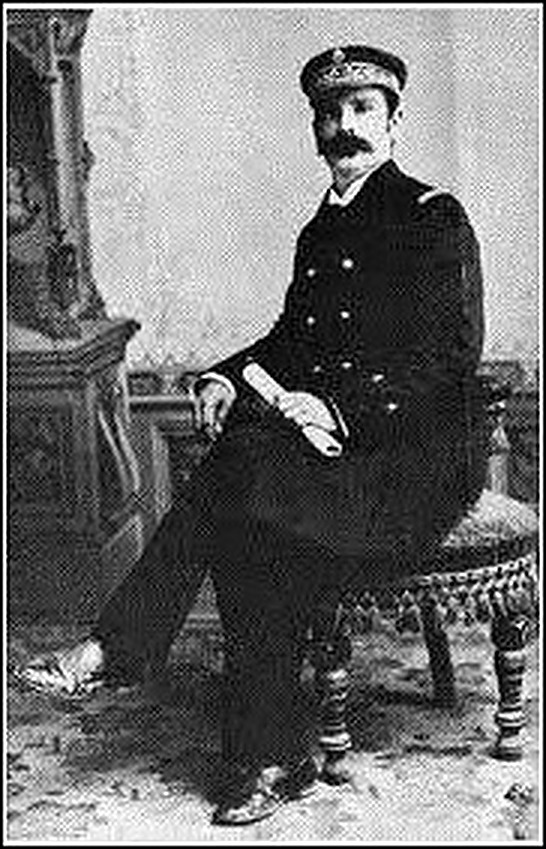
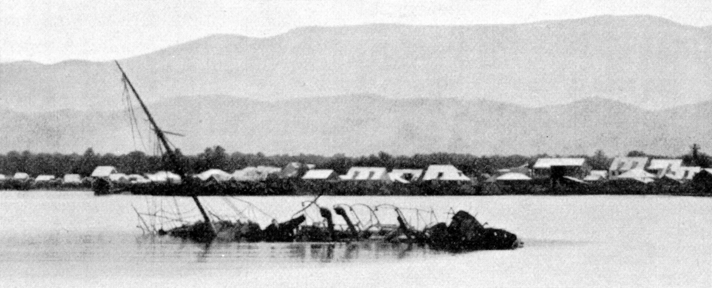

Crête-à-Pierrot, 1902
SEPT.
1902Camp Firmin
VS
 Camp Nord Alexis
Camp Nord Alexis
Hammerton KillickAmiral haïtien
Crête-à-PierrotNavire de guerre
Camp Firmin
Markomannia · cargo allemand
SAISIES
SMS Panther
Canonnière allemande
Gonaïves
baie des Gonaïves
Crête-à-Pierrot
Panther
6 sept.
Reddition ?
Gonaïves, 6 septembre 1902
Équipage à terre
Seul à bord6 septembre 1902
6 septembre 1902

OUI
NON
Répondez ici